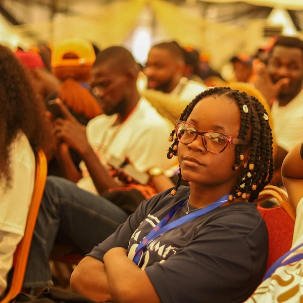

Happiness Isaac
About Me
My name is Happiness Isaac, born and brought up in Nigeria. I am the only child to my parents. I currently work with Springboard as a Data Entry Specialist. I enjoy listening to music while working, some of the things i do in the morning is read 10 pages of book. I value spending time in my quiet space - it's where I gather my thoughts and inspirations. My name is Happiness Isaac, born and brought up in Nigeria. I am the only child to my parents. I currently work with Springboard as a Data Entry Specialist. I enjoy listening to music while working, some of the things i do in the morning is read 10 pages of book. I value spending time in my quiet space - it's where I gather my thoughts and inspirations. My name is Happiness Isaac, born and brought up in Nigeria. I am the only child to my parents. I currently work with Springboard as a Data Entry Specialist. I enjoy listening to music while working, some of the things i do in the morning is read 10 pages of book. I value spending time in my quiet space - it's where I gather my thoughts and inspirations.
Smooth Wave Rafting
The Smooth Wave Rafting website was my WDD130 final project. I designed and deployed a responsive multi-page website using HTML and CSS. The site showcases adventure trips, safety information, and customer contact options.